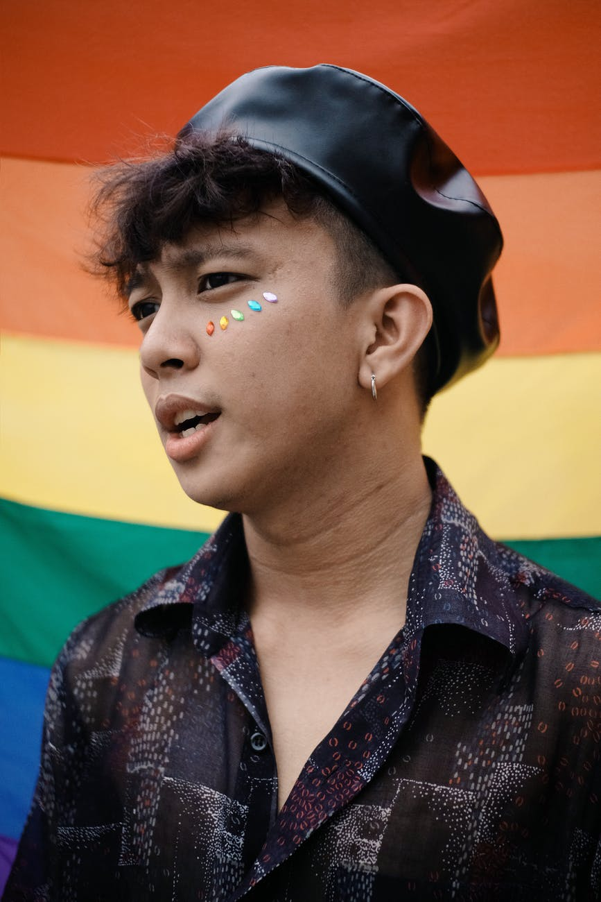

We are Inova
Inova is a company that specializes in frugal innovation and spreding our experience in said subject. Inova, established in 2018, believes in creating solutions that does not seek to amaze the customers, but create solutions that is easy to use and accessible to most. In order to spread our expertise in the field of frugal innovation we are going to arrange various innovation camps, where people can learn from our own experiences. We have innovation camps for university level students to develop low-cost ideas. Through our work we are determined to improve society.
The Inova-team
The Inova team started with a single idea. The idea was that no one should be unnable to afford innovation. Taking this idea to heart and thorougly believing in it, Safiya Carelle called in her classmates Javier Bardem and Maya Anggraeni to help her develop what would become the Inova-team. A team dedicated to innovation and creative solutions for all, they fill out eachother by each serving as a critical member of the team.
Safiya Carelle is the team dreamer. She is fiercly motivated, always thinking about new ways to solve problems, and is always thinking ahead. She is always saying "The solution is there, we just haven't located it yet", and it is clear that she firmly believes it. She is sometimes described as having hear head in the clouds, but whenever that is the case, it is usually because she is dreaming up something new and exciting.
Javier Bardem is the networking expert and rational thinker of the group. Firmly believing that a good deal is one that provides gains for both parts, he is dedicated to connecting creative ideas from the innovation camps to the business world. In his spare time he enjoys walks on the beach and fighting inequality.Maya Anggraeni is the heart of the team and acts as the glue of the group. She is always helping Javier and Safiya communicate more efficiently whenever Maya's head cooks up a difficult to do new project and Javier's cuts in with his calculated mind. In the project Maya also acts as the main speaker in the innovation camps, presenting different challenges for attending students to solve and teaching them about different innovation methods.
Scheduled events:
Inova are dedicated to help young students innovate and solve societys problems. We often have innovation camps, and to attend it is important to register your interest. You can click here to find a schedule of when and where we hold the innovation camps.